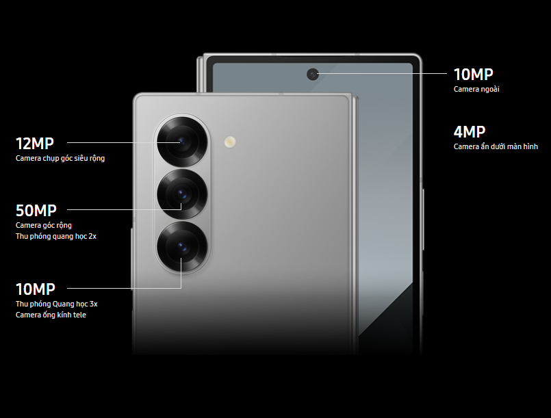

Thông tin sản phẩm
Thiết kế siêu mỏng nhẹ
Galaxy Z Fold6 không chỉ kế thừa thiết kế gập độc đáo từ các phiên bản trước mà còn được cải tiến đáng kể về độ mỏng và khối lượng tổng thể. Với độ mỏng 12.1 mm khi gập lại và 5.6 mm khi mở ra, cùng cân nặng 239g, Z Fold6 trở nên nhẹ nhàng và dễ dàng mang theo hơn bao giờ hết. Hơn nữa, kiểu dáng đổi mới này cũng khiến bề mặt trở nên gọn gàng, dễ dàng cầm nắm hơn rất nhiều.
Bản lề sử dụng công nghệ Flex Hinge quen thuộc trên dòng Z Fold5 trước đó, được thiết kế với cơ chế rãnh kép đặc biệt, giúp cải thiện khả năng mở đóng mượt mà, chắc chắn và hạn chế các nếp gấp gây khó chịu tầm nhìn trong quá trình trải nghiệm.
Gia tăng độ linh hoạt chuyển đổi giữa các chế độ sử dụng khác nhau, mở hẳn để trải nghiệm phim ảnh, gấp gọn sử dụng như điện thoại thông thường hay tính năng Flex Mode "độc quyền" trên dòng điện thoại Samsung Galaxy Z hỗ trợ tinh chỉnh độ sáng, âm thanh, chụp màn hình,... hệt như một chiếc laptop thu nhỏ.

Galaxy Z Fold6 linh hoạt chuyển đổi với thiết kế mỏng hơn và khối lượng nhẹ hơn, nhưng vẫn giữ được độ bền đáng tin cậy. Bộ khung nhôm kim loại được cải tiến, màn hình được trang bị lớp cường lực và tiêu chuẩn IP48, giúp máy kháng bụi và nước tốt hơn so với các thế hệ trước.
Xử lý mọi tác vụ nhanh nhất với bộ vi xử lý mạnh mẽ trên điện thoại Gập Galaxy
Galaxy Z Fold6 được trang bị vi xử lý Snapdragon® 8 Gen 3 dành cho Galaxy, phát triển trên tiến trình 4 nm, mang đến hiệu suất vượt trội và tiết kiệm năng lượng tối ưu. So với thế hệ trước (Galaxy Z Fold5), hiệu suất của máy đã được cải thiện hơn 18%, giúp máy xử lý tốt cho các tác vụ hằng ngày một cách mượt mà, nhanh chóng.
Khả năng đồ họa của GPU trên chip được cải thiện đáng kể tăng 19% so với đời trước đó, giúp xử lý mượt mà các trò chơi có cấu hình cao, tinh chỉnh đồ họa hiệu quả và thực hiện bất kỳ tác vụ nào bạn muốn trên thiết bị di động mà không gặp trở ngại.

Với 12 GB RAM, Galaxy Z Fold6 cho phép bạn thực hiện nhiều công việc cùng lúc một cách nhanh chóng và mượt mà. Bộ nhớ tạm lớn giúp bạn không phải mất thời gian tải lại các trang web hoặc ứng dụng khi mở lên để tiếp tục công việc.
Tính năng AI thông minh
Samsung Galaxy Z Fold6, mới nhất trong dòng sản phẩm Galaxy, được trang bị các tính năng AI tiên tiến thông qua giao diện One UI 6.1. Những tính năng này bao gồm trợ lý note thông minh giúp quản lý ghi chú hiệu quả. Trợ lý chỉnh ảnh đề xuất bộ lọc, hiệu ứng và chỉnh sửa phù hợp tạo ra những bức ảnh thật chuyên nghiệp.

Trò chuyện với Google Gemini được tích hợp để tìm kiếm ý tưởng sáng tạo cho mọi loại nội dung. Ngoài ra, điện thoại Samsung còn có tính năng khoanh vùng tìm kiếm thông minh, cho phép tìm kiếm thông tin liên quan dễ dàng bằng vài thao tác đơn giản.
Với các tính năng AI này, Galaxy Z Fold6 không chỉ mạnh mẽ về phần cứng mà còn mang lại trải nghiệm tiện lợi và thông minh, giúp người dùng thực hiện các tác vụ hằng ngày hiệu quả với ít công sức được bỏ ra nhất.
Nhân đôi trải nghiệm với màn hình cao cấp
Một điểm nổi bật dễ nhận thấy ở chiếc điện thoại Android của Samsung là màn hình Dynamic AMOLED 2X, có độ tương phản màu sắc cao và tái tạo hình ảnh chính xác, chân thực. Điều này mang đến trải nghiệm sử dụng và giải trí vô cùng hấp dẫn và thú vị.
Màn hình chính 7.6 inch với độ phân giải QXGA+ (1856 x 2160 Pixels) cho phép hiển thị mọi hình ảnh, video và nội dung đa phương tiện với độ chi tiết cao. Hơn nữa, kích thước lớn hệt như một chiếc tablet dạng nhỏ này còn hỗ trợ hiển thị nội dung được trên đa cửa sổ, trải nghiệm phim ảnh đã mắt hơn hay chia đôi hiển thị cho nhiều công việc khác nhau.

Tần số quét 120 Hz đảm bảo mọi bước chuyển đổi ứng dụng, phần mềm được mướt mắt nhất. Ngoài ra, việc trải nghiệm các tựa game đua xe, bắn súng trên khung hình tốc độ cao cũng trở nên suôn sẻ, hoàn toàn bắt mắt khi không bị vướng các trường hợp giật xé, gián đoạn.

Màn hình ngoài 6.3 inch của Galaxy Z Fold6 lớn hơn một chút so với các thế hệ Z Fold5 và Z Fold4 trước đó. Được trang bị công nghệ Dynamic AMOLED 2X và độ phân giải HD+ (968 x 2376 Pixels), màn hình này mang lại hình ảnh chi tiết và sắc nét cho mọi nội dung hiển thị.

Nhìn chung, với chiếc màn hình ngoài này, người dùng vẫn sở hữu đầy đủ tính năng hay bộ công cụ như một chiếc điện thoại thông dụng, sẵn sàng chuyển đổi để đáp ứng được các nhu cầu cá nhân.
Chụp ảnh chuyên nghiệp với ProVisual Engine
Giới thiệu bộ camera mạnh mẽ nhất của Fold.22 Với NPU được nâng cấp với các thông số kỹ thuật đáng kinh ngạc và ProVisual Engine, trải nghiệm đa phương tiện của bạn sẽ đạt đến tầm cao mới.

Với khả năng thu phóng quang học 2x, 3x mà vẫn giảm nhiễu, giữ độ phân giải rõ nét nhờ ProVisual Engine - công cụ tích hợp Galaxy AI, bạn có thể dễ dàng bắt trọn mọi khoảnh khắc với độ chi tiết cao ngay trong khung hình.
Ngoài ra, camera trên Galaxy Z Fold6 còn hỗ trợ quay video chuẩn 8K, phù hợp cho những người làm nội dung đa phương tiện, cho phép thu và chỉnh sửa video chất lượng cao trực tiếp trên điện thoại mà không cần đến những công cụ hỗ trợ cồng kềnh khác.
Linh động cả ngày dài với dung lượng pin lớn
Điện thoại được trang bị viên pin 4400 mAh, con chip tiết kiệm năng lượng và tối ưu hóa hiệu suất sử dụng. Với quản lý pin thông minh, người dùng có thể sử dụng điện thoại trong thời gian dài trước khi cần sạc lại.

Thời lượng pin cụ thể sẽ phụ thuộc vào cách sử dụng, nhưng trong điều kiện thông thường có thể duy trì hoạt động hoàn toàn đủ cho một ngày. Theo như hãng nhận định, viên pin của Galaxy Z Fold6 có thời lượng pin có thể phát âm thanh lên đến 77 giờ, video đến 23 giờ nhỉnh hơn so với con số 73 và 21 giờ của người đàn anh Z Fold5.